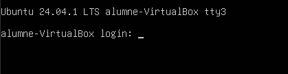
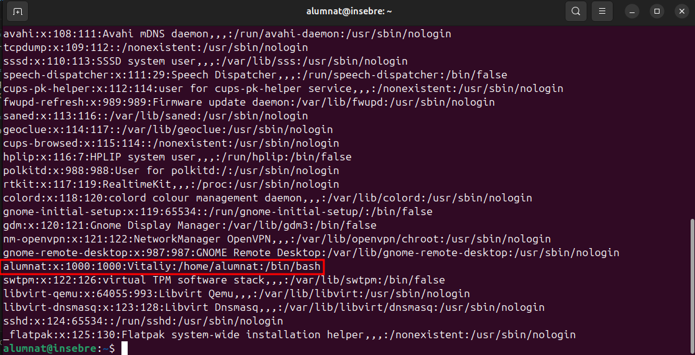
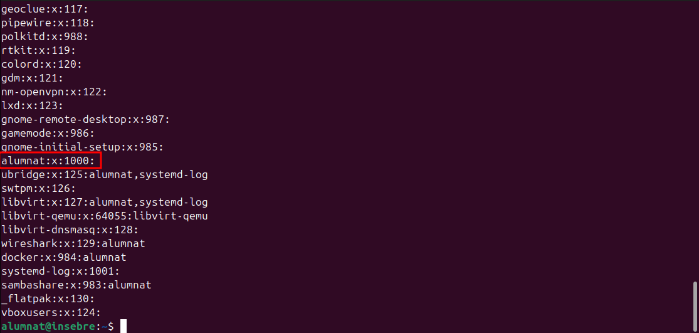
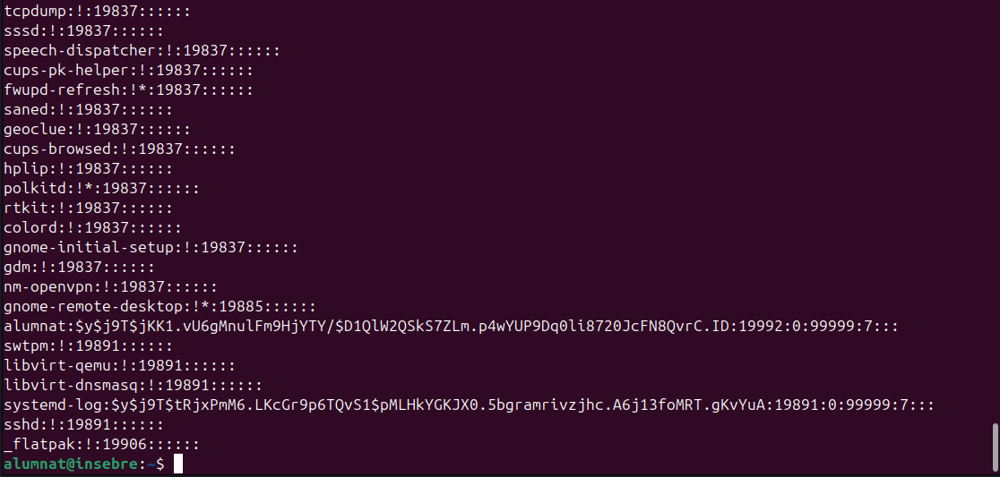
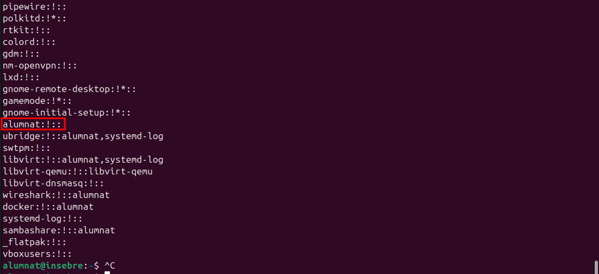

Fitxers importants
Introducció als fitxers de configuració
Els fitxers que explicarem a continuació es poden visualitzar mitjançant la comanda cat /etc/passwd. A més, es poden editar, però no es recomana fer-ho d'aquesta manera.
sudo nano /etc/passwd
Terminal nativa
El primer pas explica com accedir a la terminal nativa (TTY) utilitzant la combinació de tecles Control + Alt + F3. Això és útil en situacions on l'entorn grfic no respon o necessites treballar des d'una consola directa.

Per tornar enrere pots fer-ho amb Control + Alt + F1.
L'arxiu /etc/passwd
Aquest fitxer conté la informació bsica sobre tots els usuaris del sistema, incloent-hi els noms d'usuari i els seus identificadors. Editar aquest fitxer pot ser necessari per gestionar usuaris o solucionar problemes de configuració.

Desglossament de /etc/passwd
alumnat: Nom d'usuari, amb el qual l'usuari inicia sessió.x: Indica que la contrasenya encriptada es troba a/etc/shadow.1000: Identificador d'usuari (UID), únic per a cada usuari normal.1000: Identificador de grup (GID), que indica el grup principal de l'usuari.Vitaliy: Nom complet o informació addicional sobre l'usuari./home/alumnat: Directori home de l'usuari, on s'emmagatzemen fitxers personals./bin/bash: Shell predeterminat que s'utilitza quan l'usuari inicia sessió.
Aquesta línia conté informació essencial sobre l'usuari alumnat i el seu entorn al sistema Linux.
L'arxiu /etc/group
Aquest arxiu gestiona els grups d'usuaris al sistema. s útil per gestionar permisos i recursos compartits entre diversos usuaris.

Desglossament de /etc/group
alumnat: Nom del grup. En aquest cas, indica el grup associat a l'usuarialumnat.x: Indica que les contrasenyes de grup no es mostren o no són utilitzades, ja que normalment s'emmagatzemen en un altre fitxer.1000: Identificador del grup (GID), que és únic per a cada grup. En aquest cas,1000és el GID del grupalumnat.
Aquesta línia conté informació bsica sobre el grup alumnat, que pot incloure altres usuaris i determinar permisos d'accés.
L'arxiu /etc/shadow
Aquí és on es guarden les contrasenyes encriptades dels usuaris. El símbol ! indica que la contrasenya est bloquejada, mentre que $ significa que la contrasenya est encriptada amb un algoritme fort com SHA-512. s crucial no manipular malament aquest fitxer per evitar problemes d'accés.

Desglossament de /etc/shadow
-
Nom d'usuari:
alumnat
Nom del compte d'usuari al sistema. -
Hash de contrasenya:
$y$j9T$jKK1.vU6gMnulFm9HjYTY/$D1QlW2QSkS7ZLm.p4wYUP9Dq0li8720JcFN8QvrC.ID
s el valor generat a partir de la contrasenya de l'usuari, utilitzant un algorisme de hashing. -
ID d'usuari:
19992
Identificador únic de l'usuari dins del sistema. -
ID de grup:
0
Indica que l'usuari pertany al gruproot, que té permisos d'administrador. -
Expiració de contrasenya:
99999
Indica que la contrasenya no té una data d'expiració definida. -
Advertència:
7
Significa que s'advertir a l'usuari 7 dies abans de que la contrasenya expiri (tot i que no s'aplica en aquest cas). -
Altres camps:
Els camps finals són buits, que podrien contenir informació addicional com l'últim canvi de contrasenya.
L'arxiu /etc/gshadow
L'arxiu gshadow conté informació sobre contrasenyes específiques de grups. s menys comú d'editar però important quan cal gestionar l'accés a grups amb permisos específics.

Desglossament de /etc/gshadow
-
Nom del grup:
alumnat
Representa un grup d'usuaris dins del sistema, potencialment destinat a estudiants o usuaris relacionats amb el món acadèmic. -
Contrasenya:
!
El símbol!indica que no hi ha contrasenya associada amb aquest grup, per tant, no es requereix autenticació per accedir a les seves funcionalitats. -
Membres del grup: (buit)
No hi ha membres assignats al grup "alumnat", cosa que significa que actualment no s'ha creat cap connexió amb usuaris. -
Administradors del grup: (buit)
No s'han especificat administradors per gestionar aquest grup, indicant que no hi ha un control assignat sobre la seva administració.